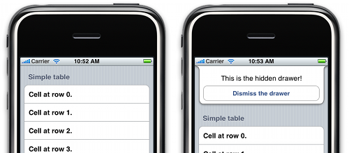

Please note: this article is part of the older "Objective-C era" on Cocoa with Love. I don't keep these articles up-to-date; please be wary of broken code or potentially out-of-date information. Read "A new era for Cocoa with Love" for more.
Intercepting status bar touches on the iPhone
You can configure your iPhone applications so that a touch in the status bar will scroll a UIScrollView to the top. I'll show you how you can intercept this touch event to use status bar touches for other purposes. The sample application will show a hidden drawer that slides out from the status bar when you tap it.
Touches in the status bar
A lesser known user-interface feature on the iPhone is that touches in the status bar will usually scroll the main UIScrollView to the top, providing a quick way to scroll to the top of long documents.
This will work in your application when exactly one UIScrollView returns YES for the scrollsToTop property (YES is the default). If more than one UIScrollView returns YES for this property (or the UIScrollView's delegate returns NO from scrollViewWillScrollToTop:) the scroll to top functionality will be disabled.
That's the ordinary functionality but how do we achieve different functionality?
The HiddenDrawer sample appliction
These screenshots show the HiddenDrawer sample application. When the status bar is tapped on the left, the hidden drawer animates out from under the status bar, resulting in the state shown on the right.
Stealing status bar touch events
The trickiest part of the sample application is detecting a touch in the status bar.
By implementing a custom setContentOffset:animated: method on a UITableView and setting a breakpoint in that method, you can see in the debugger stack that the UIApplicationsendEvent: method is invoked for status bar touches, so that's where we'll begin.
CustomApplication
Overriding UIApplication is extremely rare so I'll explain how to make it work. Once you create the subclass of UIApplication you need to tell the program to use that subclass. In Cocoa Senior (Mac OS X) you specify application subclasses in the Info.plist file. In Cocoa Touch, you specify custom application subclasses by name in the UIApplicationMain function in the main.m file:
int retVal = UIApplicationMain(argc, argv, @"CustomApplication", nil);sendEvent:
The only method override we need in CustomApplication is sendEvent:. The difficult part is then working out from the UIEvent which events are status bar touch events — unfortunately, the allTouches method returns an empty array for status bar touches.
Instead, we delve into the secret GSEvent.
I previously accessed GSEvent in my post Synthesizing a touch event on the iPhone. In that post, I created a PublicEvent class and a fake GSEventProxy class to access the required fields. This time, I'm going to use a different approach and jump straight to the data I need.
- (void)sendEvent:(UIEvent *)anEvent
{
#define GS_EVENT_TYPE_OFFSET 2
#define GS_EVENT_X_OFFSET 6
#define GS_EVENT_Y_OFFSET 7
#define STATUS_BAR_TOUCH_DOWN 1015
// Traverse from the UIEvent to the GSEvent to the type
int *eventMemory = (int *)[anEvent performSelector:@selector(_gsEvent)];
int eventType = eventMemory[GS_EVENT_TYPE_OFFSET];
// Look for status bar touches by event type
if (eventType == STATUS_BAR_TOUCH_DOWN)
{
// The next 6 lines aren't essential but if you want to know where the
// touch coordinates live, here they are:
int xMemory = eventMemory[GS_EVENT_X_OFFSET];
int yMemory = eventMemory[GS_EVENT_Y_OFFSET];
typedef union {int intValue; float floatValue;} Int2Float;
float x = ((Int2Float)xMemory).floatValue;
float y = ((Int2Float)yMemory).floatValue;
NSLog(@"Status bar down at %f, %f", x, y);
// Send a message to the delegate to handle the action
[(HiddenDrawerAppDelegate *)self.delegate toggleDrawer];
}
else
{
[super sendEvent:anEvent];
}
}You may be curious to know where the OFFSET values come from. The answer is that I spent a while staring at the raw memory values in the GSEvent object while deliberately causing status bar and other touch events — nothing fancier than that. It's tricky and unreliable. If it works at all in iPhoneSDK3.0, it'll be pure luck.
I also use a union here. This is because I step through memory as ints and in C, a basic cast from int to float causes a value conversion (I want a reinterpret, not a value conversion).
I also chose to suppress status bar touch events going through to the UITableView by the normal route. If you want to re-enable this behavior, you can take the [super sendEvent:anEvent]; line out of the else block and put it in the main method body.
Animating the drawer
The sendEvent: implementation above invokes the toggleDrawer method on the application's delegate.
All that's required is to animate the drawer's view in and push the table's view down:
drawerController = [[HiddenDrawerViewController alloc] init];
// Position the drawer below the status bar
CGRect drawerFrame = drawerController.view.frame;
CGRect statusBarFrame = [[UIApplication sharedApplication] statusBarFrame];
drawerFrame.origin.x = statusBarFrame.origin.x;
drawerFrame.size.width = statusBarFrame.size.width;
drawerFrame.origin.y = statusBarFrame.origin.y + statusBarFrame.size.height;
// For the animation, move the drawer up by its own height.
drawerFrame.origin.y -= drawerFrame.size.height;
// Place the drawer and add it to the window
drawerController.view.frame = drawerFrame;
[window addSubview:drawerController.view];
// Start the animation
[UIView beginAnimations:nil context:nil];
// Move the table down
CGRect tableFrame = viewController.view.frame;
tableFrame.origin.y += drawerFrame.size.height;
viewController.view.frame = tableFrame;
// Move the drawer down
drawerFrame.origin.y += drawerFrame.size.height;
drawerController.view.frame = drawerFrame;
// Commit the animation
[UIView commitAnimations];If you download the whole project, you'll see that there's also an animate up and remove branch that gets run if the drawerController already exists.
Conclusion
You can download the HiddenDrawer sample project (30kB) to see the whole application in action.
A hidden drawer under the status bar isn't necessarily something that every iPhone application should have but the obscure, secretive nature of it appeals to me.
The approach of determining which UIEvent we want by the type field in the GSEvent is a little precarious. Apple are free to change the structure of GSEvent at any time, which could cause your application to misbehave or crash so this type of code would need to be tested on each iPhone OS release to ensure that it still works.
Variable argument lists in Cocoa
Simple methods for date formatting and transcoding